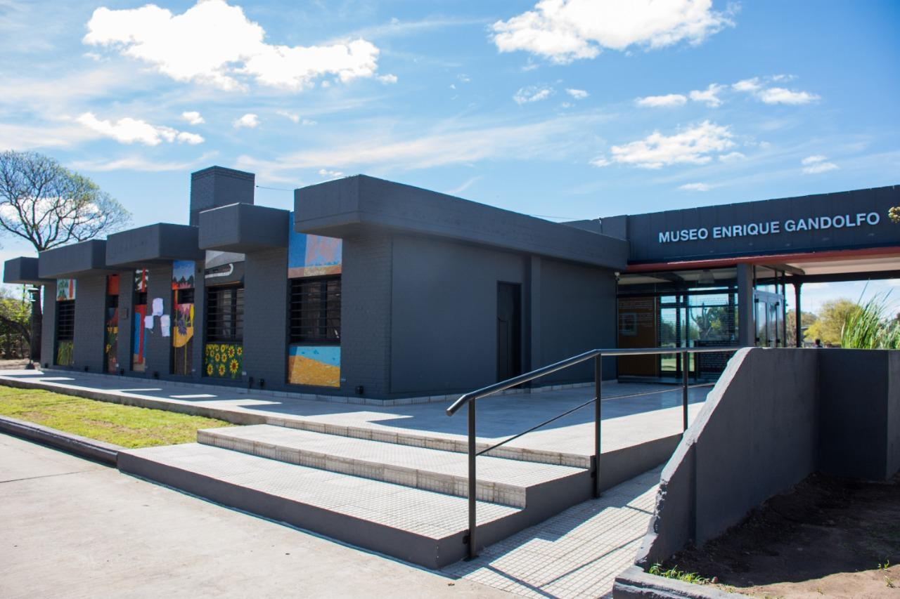
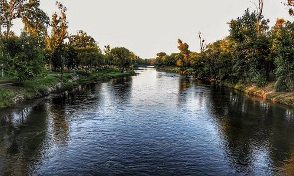
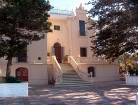

Algunas de las atracciones turísticas más populares en Río Tercero
Museo Enrique Gandolfo
El Museo Enrique Gandolfo es una obra con la cual se restaura y da valor el edificio de la ex Estación de Trenes Ferrocarril Mitre, ubicado en calle Acuña entre calles Mitre y Alberdi. Para ello se genera un nuevo espacio cultural a partir del cual se logra conservar y exhibir parte de nuestro patrimonio histórico.
Balneario Municipal
Espacio único para el disfrute al aire libre, ubicado a pocas cuadras del centro y sobre el Río Ctalamochita; combina servicios con un medio natural de imponente belleza. Durante los fines de semana de enero y febrero, se desarrolla RIO EN MOVIMIENTO programa que ofrece actividades recreativas, deportivas y eventos artísticos culturales.
La Casa de la Cultura
Vivienda histórica de marcada influencia europea que alberga en la actualidad al Museo Arqueológico e Histórico Regional “Florentino Ameghino”. Además de las exposiciones permanentes y talleres culturales, se realizan aquí muestras transitorias y visitas guiadas. Ubicada en la esquina de Int. De Buono y San Pedro.
Parroquia nuestra señora de lourdes
Inaugurada en 1946, es un hito urbano que otorga identidad a la ciudad de Río Tercero. Jerarquiza el atrio, el mural de la Última Cena realizado por alumnos y docentes de la Escuela de Bellas Artes local “Lino Spilimbergo”. Se la puede contemplar frente a la Plaza San Martín.

Museo Estafeta Postal Lastenia
La primera estafeta postal, con sus paredes de adobe y techo de troncos, alberga hoy al Museo Estafeta Postal Lastenia. Ofrece visitas guiadas, muestras transitorias, y talleres de artesanía.